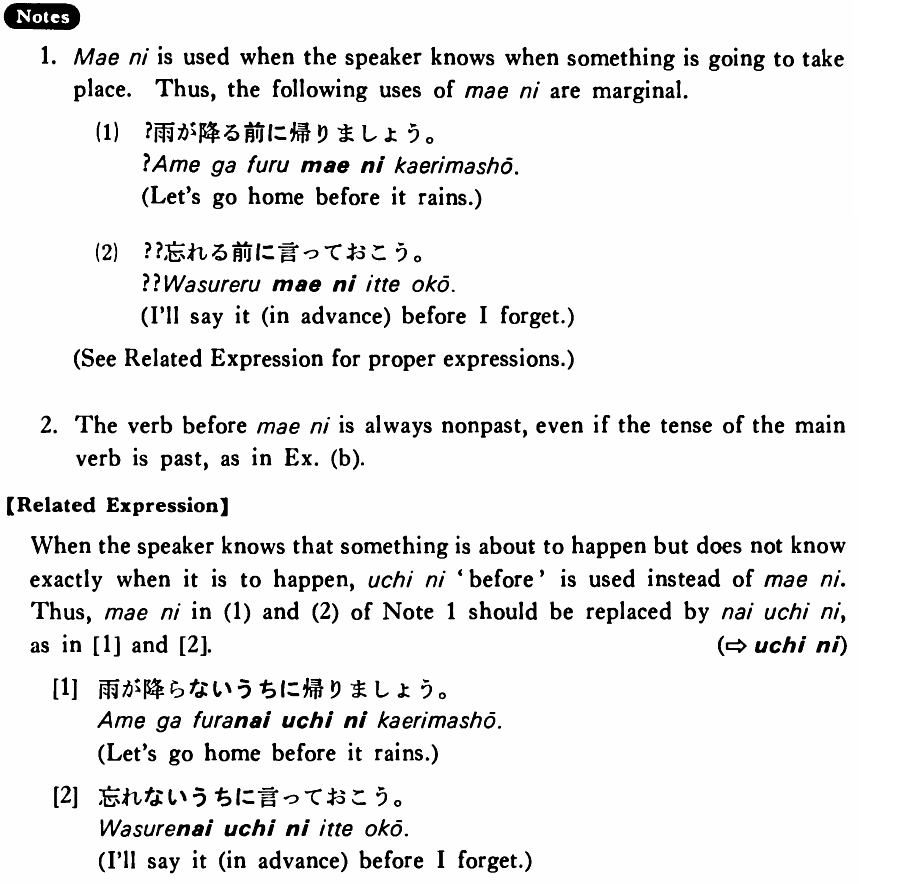

←
DoJG
→
前に・まえに
(B. 231)
Example sentences
(ksa).
ジャクソンさんは日本へ行く
前に
日本語を勉強した・しました。
Mr. Jackson studied Japanese before he went to Japan.
(ksb).
旅行の
前に
風邪を引いた・引きました。
Before the trip I caught a cold.
(ksc).
駅の
前に
煙草屋がある・あります。
There is a tobacco shop in front of the station.
(a).
日本人はご飯を食べる
前に
「いただきます。」と言う。
The Japanese say “Itadakimasu” (literally: I humbly receive (this food)) before eating their meals.
(b).
テイラーさんは日本へ行く
前に
ハワイに寄りました。
Mr. Taylor stopped in Hawaii before he went to Japan.
(c).
私は試験の
前に
映画を見に行った。
Before the exam I went to see a movie.
Formation
(i)
Vinformal nonpast
前に
話す
前に
Before someone talks/talked
食べる
前に
Before someone eats/ate
(ii)
Noun
の前に
朝ご飯
の前に
Before breakfast
